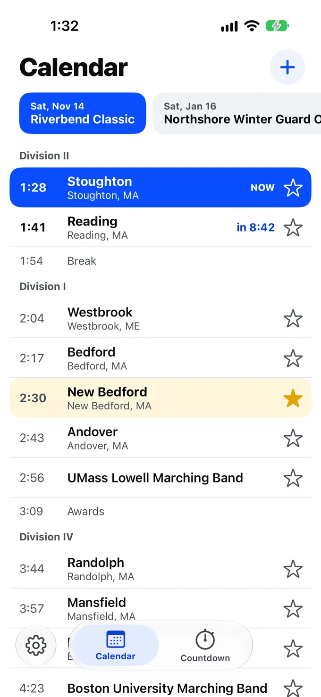
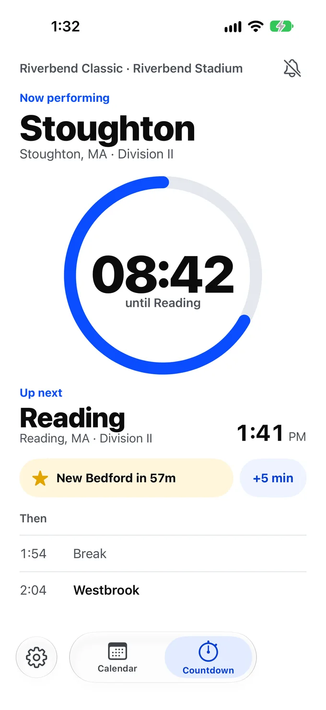
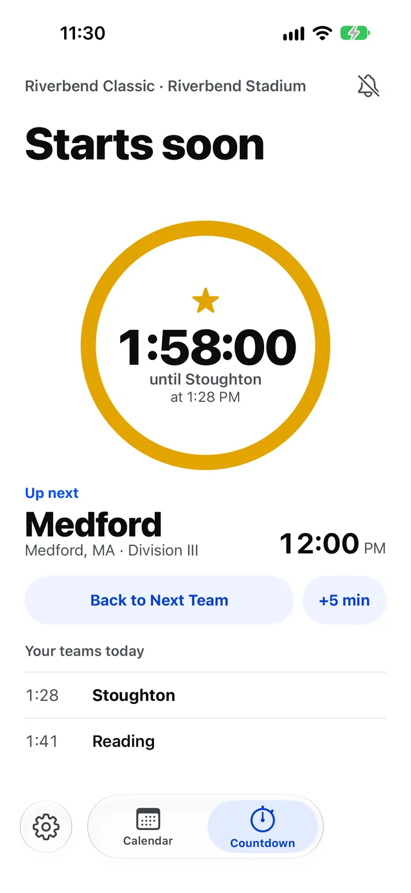

Getting started
- Open the app. The first time, the Tour walks you through it. With nothing added yet, the app says No Events Yet. Tap Add Event.
- Paste the schedule's link, or tap Browse Events and pick the event.
- Check what the app found, then tap Add to Calendar.
- Tap the star beside your school. iOS asks whether the app may send pings.
- On the day of the event, open the app. It opens on Countdown.
The Tour and the Demo Event
The first time you open the app, the Tour shows a card over each part of the screen, with an arrow to the control it explains: Add Event, Calendar, Countdown and Setup. Tap Next to go on, or Back to see a card again.
Competitions run only at certain times of year, so you may have no event to try the app with. At the end of the first part, or when you tap Skip Tour, the Tour asks whether to add the Demo Event. Tap Add Demo Event, or Not Now to finish.
The Demo Event is made up. It has seven teams and Awards. The first team starts about 10 minutes after you add it, and each row 10 minutes after the last, so you can watch the ring count down, try +5 min and get a ping. Stoughton is starred. The Tour then points at the ring, Stoughton's chip, +5 min, the bell and the stars.
To take the Tour again, open Setup and tap Take the Tour under Help. Adding the Demo Event again replaces the old one with a new one that starts 10 minutes from then.
To delete the Demo Event, open Setup, then Events, and swipe it. The Stoughton star the Demo Event added goes with it. A star you added yourself stays.
Calendar and Countdown
The app has two pages. Tap the pill at the bottom to switch between them. The cog at the lower left opens Setup.
The app opens on Countdown on a day an event runs, and on Calendar on any other day. On a closed iPhone Duo, it always opens on Countdown.
When there is room, as on iPad in landscape, Calendar and Countdown sit side by side, with Calendar on the left. In a narrower space you see one page at a time, with the pill. A closed iPhone Duo shows one page at a time. An open iPhone Duo follows the same rule: both pages when it is held wide, and one page when it is held tall.
On iPhone Duo, the system keeps its bars down the right-hand edge, beside the clock. There Calendar, Countdown and the cog sit together at the bottom of that edge instead of in the pill. With both pages showing, the cog is there on its own.
Add Event
Tap + on the Calendar page. There are three ways to bring in a schedule, and each one starts with a schedule published on a web page. Nothing is saved until you add it, and Cancel leaves everything as it was.
Paste a link
Copy the schedule's link, then tap Paste beside Schedule Link. You can also type the link and tap Go. The app shows Reading this page… and you can tap Stop at any time.
Browse Events
Browse Events finds an event by site, without a link. Tap Browse Events, then pick a site from Schedule Sites. Browse Events shows once you have set up a Schedule Site in Setup. The app draws these lists itself, so no web page opens.
A site's events run from today onward, grouped by date. The app checks the events in the next 14 days and marks them:
| The event says | What it means |
|---|---|
| Checking… | The app is reading that event's page. |
| Schedule Posted | The page holds a schedule you can add. |
| No Times Yet | The page holds no schedule so far. |
| On Your Calendar | You have already added this event. |
Later events carry no mark. Tap an event to read its page. If it offers more than one schedule, such as Prelims and Finals, Choose a Schedule asks which one you want.
For any other site, paste the link or share it from Safari.
Share from Safari
Open the schedule page in Safari, tap Share, and choose Event Calendar Countdown. A small preview shows the title, the date and the number of teams. Tap Add, and the event is there when you open the app. You can also share a PDF from Files, or a link from another browser.
The preview tells you if the event needs a look first, as when a date needs confirming or a page has several venues. The app then opens the review when you next open it. If the app cannot read what you shared, tap Save Link and it tries again in Add Event when you open the app.
Found on This Page
Before anything is saved, the app shows what it read: the title, date and venue, the number of Teams, Breaks + Awards and Your Favorites, the first and last team with their times, and every row of the schedule.
Check the date and the times. You can change the Date and the Time Zone here. Then tap Add to Calendar.
A wrong date is the worst mistake a schedule can make, so the app says when it is unsure. When a date needs checking, tap Confirm Date before you add the event. You may see these notes:
| The app says | What to do |
|---|---|
| The date was guessed. Check it before adding. | Compare the date with the page, and change it if it is wrong. |
| The time zone was guessed. Check it before adding. | Pick the venue's time zone if this one is wrong. |
| AM and PM were worked out from the order of the times. | Look at the first and last times. |
| Some times on this page are out of order. | Look through the schedule against the page. |
| This page was hard to read. Check the date before adding. | Check the date and the schedule. |
| Using Performance Time | The page lists several times on each line, and the app names the one it used. |
| 2 rows could not be read | The app counts these rather than dropping them quietly. Look on the page for what is missing. |
If you have already added the event, the app says Already on Your Calendar and offers Refresh.
A page with several venues
Some pages run several venues at the same time. The app lists the venues, each with its number of teams and favorites. Tick the ones you want, then tap the button, such as Add 2 Venues. A venue holding one of your favorites starts ticked.
Each venue becomes its own event. Added marks a venue already on your Calendar, and Could not read this venue marks one the app could not use.
The Calendar page

The chips at the top hold one event each, with upcoming events first. Tap a chip to see that event. It starts on the event running today, or else the next one coming up.
Chips only browse. Looking at next weekend's event never moves Countdown, so it cannot pull the ring off the event in front of you.
Each team row shows the time, the team's name, its city and state, and a star. Rows stay in the order the page gave them, under division headings. An event that runs for several days has a heading for each day.
- NOW marks the row on the field.
- The next row counts down, such as in 8:42.
- Rows already past are dimmed.
- Break and Awards rows are plain and take no star.
- When the event is running late, a row shows the new time large and the published time struck through beneath it.
Times are always the venue's. If the venue's time zone differs from your device's, the page says so, such as Times shown in EST.
Pull down to refresh the event.
Favorites
A favorite is a school, not a team, so one star covers every team that school fields. Stoughton's marching band, color guard and percussion all show the star.
Tap the star on a row to add a favorite, and tap it again to remove it. You can also swipe a team's row to the right. A long swipe adds the favorite straight away, and a short one shows a Favorite button to tap. Swipe the same way to remove it. The star stays at every event, including events you add later.
The app matches schools by name, city and state, so Bedford and New Bedford stay apart. If a star lands on the wrong school, tap it to clear it.
To see or remove all your favorites, open Setup, then Favorite Schools, and swipe one to remove it.
The Countdown page

This is the page for the stands. From top to bottom, it shows:
- The event, and the bell.
- Now performing: the team, its city and state, and its division.
- The ring: it starts full at 12 o'clock and unwinds to the next team, with the time left in the middle.
- Up next: the next row and its time.
- The favorite chip and +5 min.
- Then: the two rows after that, for planning a break.
The clock reads minutes and seconds under an hour, such as 08:42, and hours, minutes and seconds above it, such as 1:58:00.
Through the day
| When | The top says | The ring |
|---|---|---|
| No event today | The next event's name and date | Full, with the days and hours left |
| Before the first row | Starts soon | Full until the last 60 minutes, then unwinds to the first row |
| A team is on the field | Now performing and the team | Unwinds to the next row |
| Break or Awards | Break or Awards | Unwinds to the next row |
| The last row | The team, with Last team of the day below the ring | Estimated time left, using 10 minutes for the row |
| Finished | That's the end of the show | Empty, with the next event below it if there is one |
Point the ring at a favorite

The favorite chip shows your next favorite today, such as Stoughton in 1h 58m. Tap it and the ring counts to that team instead, with its time beneath, and Your teams today lists the favorites still to come.
Now performing and Up next keep following the event. Tap Back to Next Team to return, or let it end by itself when that team's time comes.
Two events on one day
When more than one event runs today, tap the event line at the top to choose which one Countdown follows. Your pick holds for the day. Until you pick, Countdown follows the event holding your next favorite, or else the one with the soonest next row.
Running late
Events rarely run to the minute. Tap +5 min on Countdown and every time, countdown and ping moves with it. Tap it again for more, and Countdown says how far behind things are, such as Running 10 min late.
Where the change starts depends on when you tap:
- In the first half of a team's time, the app takes it that the team has not started, so that team moves back to Up next.
- In the second half, the app takes it that the team is on the field, so the change starts with Up next.
Tap Back on Time when the event catches up. This also fixes a mistaken tap. Rows already past keep the times they really ran at.
The published times stay on the Calendar page, struck through beneath the new ones. Your running-late changes reach your other devices with the event. They do not reach anyone else's phone, so each person at the event taps their own +5 min.
Pings
A ping is a notification before a team, such as Stoughton in 5 minutes, On the field at 1:28 PM. You choose how early, and for which teams, in Setup:
- Notify Me turns pings on or off. The bell on Countdown does the same.
- Teams is Favorites Only or Every Team.
- Ping Before is 1, 2, 5, 10 or 15 minutes. It starts at 5.
The app asks for permission the first time you star a school, tap the bell or turn on Notify Me. It never asks when it opens. If you said no, Notify Me reads Off in Settings, and Open Settings takes you to the place to change it.
Break and Awards rows never ping. An exhibition team counts as a team. A team starting sooner than your Ping Before time gets no ping. Pings for favorites are Time Sensitive, so you can let them through a Focus.
Pings are set from the schedule on your device, and iOS holds a limited number at a time. If you have more upcoming than that, the last one says Open Event Calendar Countdown to keep getting pings, so they never stop without telling you.
Lock Screen
Live Favorite Countdown puts the time left until your next favorite on the Lock Screen and in the Dynamic Island. It shows the team, its division, the event and the time. It is on from the start, and you can turn it off in Setup.
A countdown starts when you open the app and your next favorite is within 8 hours. Open the app, then lock your iPhone.
The app has no server, so a countdown cannot move on by itself. When its time arrives it shows the scheduled time and Open the app to update. It moves to your following favorite the next time the app runs. A +5 min tapped on another device reaches it the same way.
If you swipe a countdown away, it stays away for that favorite. Your next favorite starts as usual.
Setup
Tap the cog at the lower left, or at the bottom right on iPhone Duo. Changes apply straight away, and Done closes Setup.
| Row | What it does |
|---|---|
| Theme | Opens the theme cards. See Themes. |
| Keep Screen On | Keeps the screen awake while Countdown is showing and an event is under way, from an hour before its first row. It starts off. |
| Notify Me, Teams, Ping Before | Your pings. |
| Live Favorite Countdown | The countdown on your Lock Screen. |
| Schedule Sites | The sites Browse Events lists. Tap + to add one with a name and a link, tap one to change it, or swipe it to delete it. Entries with the same name show as one site. |
| Share Schedule Sites | Shows once a Schedule Site is set up. Sends every Schedule Site as one file, by AirDrop, Messages, Mail or any other way the Share Sheet offers. When someone opens the file, the app shows its sites and adds the new ones only if they tap Add. |
| Favorite Schools | Your starred schools. Swipe one to remove it. |
| Events | Every event you have added. Tap one for its details, tap its arrow to refresh it, or swipe it to delete it. |
| iCloud Sync | A status, not a switch. See iCloud. |
| Support, Privacy Policy | Open these pages in your browser. |
| Take the Tour | Starts the Tour again, and offers a new Demo Event. |
Fix an event's date or time zone
Open Setup, then Events, and tap the event. You can change the Date, or the First Day of a longer event, and the Time Zone. The Date moves every row by the same number of days. Source shows where the schedule came from, Updated shows when it was last read, and Refresh reads it again.
The rows themselves cannot be edited by hand. If the order or a time is wrong on the page, a refresh picks up the fix once the page changes.
Delete an event
Open Setup, then Events, and swipe the event. The app asks you to confirm, because this removes the event and its running-late changes from all your devices.
Themes
Open Setup, then Theme. Slide the cards to preview each one, then tap Apply. Leaving without Apply keeps the theme you had.
- Daylight is for afternoons. It is the theme the app starts with.
- Field Lights is for evening performances.
- High-Vis is for reading at a distance, with heavy type and a segmented ring.
A theme keeps its own look whether your device is set to Light or Dark.
Keeping a schedule up to date
Schedules change. To read an event's page again, pull down on the Calendar page, or use Refresh in Setup. The app also refreshes on its own:
- When you open it, for an event today or tomorrow that was last read more than 30 minutes ago.
- In the background on the day of an event, when iOS allows it. iOS may not run this, so pull down if you need the latest.
A short notice says what changed, such as 3 times changed. Your running-late changes and any date or time zone you corrected stay in place. If the page's own date changes, the app drops your date correction, so the date does not move twice.
A bad read never wipes a good schedule. If a refresh looks worse than what the app already holds, the app keeps your schedule and says so, starting Kept your schedule. An event added from a page with no link to read again says No link to refresh in Setup.
Apple TV
The Apple TV app is a viewer. It shows the events and favorites from your iPhone or iPad, brought by iCloud, and it reads no web pages. To add an event, use Add Event on your iPhone or iPad. The Apple TV needs the same Apple Account, with iCloud on.
- Calendar and Countdown sit side by side, with no tabs. Swipe or press left for Calendar, and right for Countdown.
- Favorites. On Calendar, click a team to make it a favorite, and click it again to remove the star. The star reaches your other devices.
- Running late. Countdown has +5 min and Back on Time, as on iPhone and iPad.
- Setup is at the foot of Calendar's left column. It holds the theme, Keep Screen On (on, so the screen saver waits during a show), your favorite schools and events, and Add Demo Event.
- Top Shelf. Focus the app on the Home Screen to see your favorite teams that perform in the next day. Click one to open its event on Countdown.
With no events, the Apple TV says No Events Yet. When every event on it is over, it says No Upcoming Events. Either way, add your next event on your iPhone or iPad, and it shows up on the Apple TV. Each Apple TV user sees the events from their own iCloud account.
iCloud
Your events, favorites and Schedule Sites sync between your devices when they are signed in to the same Apple Account. Your other Setup choices stay on each device. Changes can take a moment to arrive.
Setup shows the status under iCloud Sync:
- On means this device can sync.
- Sign in to iCloud in Settings means the app is working on this device alone.
- Not Available means iCloud cannot be used on this device right now.
Sync reaches your own devices only. To share an event with family on their own Apple Accounts, send them the link so they can add it themselves. To give another parent your Schedule Sites, use Share Schedule Sites in Setup. The Privacy Policy explains how sync treats your data.
Accessibility
- VoiceOver reads the ring as one sentence, such as 8 minutes 42 seconds until Reading. Stars, the bell and the pill have labels that match the words on screen.
- Larger text works through the accessibility sizes, and the layout stacks rather than cutting off names.
- Reduce Motion stops the ring's animation.
- Meaning is never color alone. NOW is a word, a favorite's star is filled, and a changed time keeps the published time beside it.
Words the app uses
The app uses one word for each idea, on every screen.
| Word | Means |
|---|---|
| Event | One competition you have added, such as Riverbend Marching Band Classic. |
| Schedule | The ordered rows of an event. |
| Team | A group that performs, including exhibition groups. |
| School | What a star points at. One school can field several teams. |
| Favorite | A starred school. |
| Division | The heading a team competes under, as printed on the page. |
| Exhibition | A team that performs but does not compete. |
| Break, Awards | Rows on the schedule with no team. |
| Now performing | The row on the field. |
| Up next | The row after it. |
| Setup | The area behind the cog. Settings means the iOS app. |
| Add Event | Bringing a schedule into the app. |
| Ping | A notification before a team. |
| Running late | How far behind the event is, set with +5 min and cleared with Back on Time. |
| Browse Events | The way to find an event by site, without a link. |
| Schedule Site | A site set up in Setup that lists events, as a name and a link. |
| Schedule Posted | An event in the next 14 days whose page holds a schedule. |
| No Times Yet | An event in the next 14 days whose page holds no schedule yet. |
| Tour | The walk-through over the app's own screens, from Setup's Take the Tour. |
| Demo Event | The made-up event the Tour adds, starting 10 minutes after it is added. |
More help
The Support page covers what to do when a page cannot be read, common questions, and how to reach the developer.